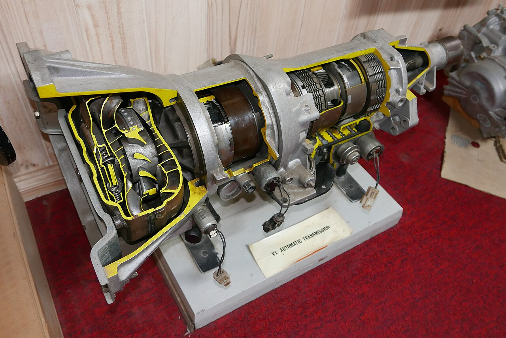
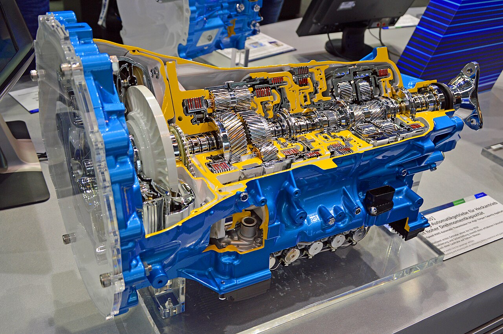
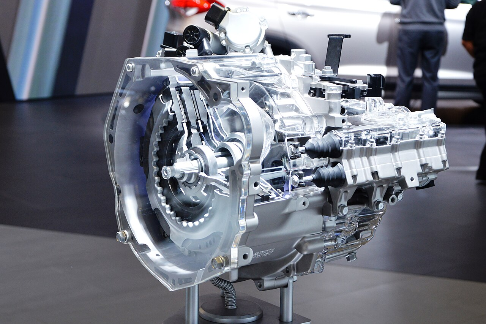
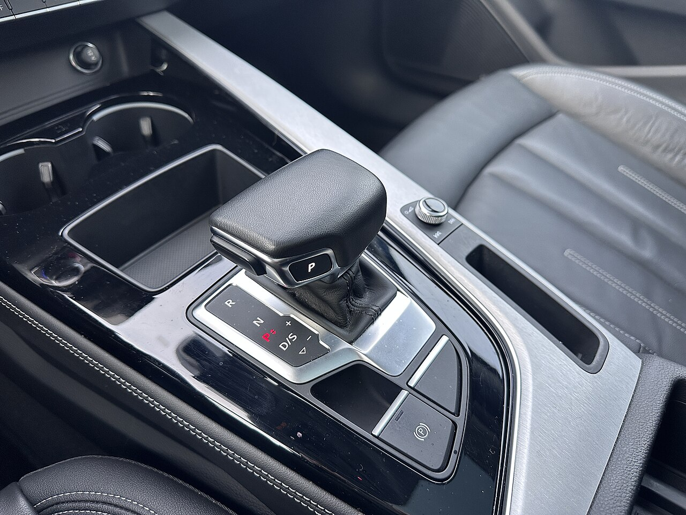
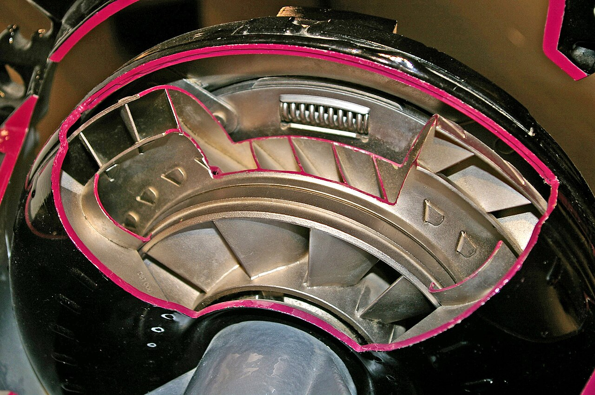
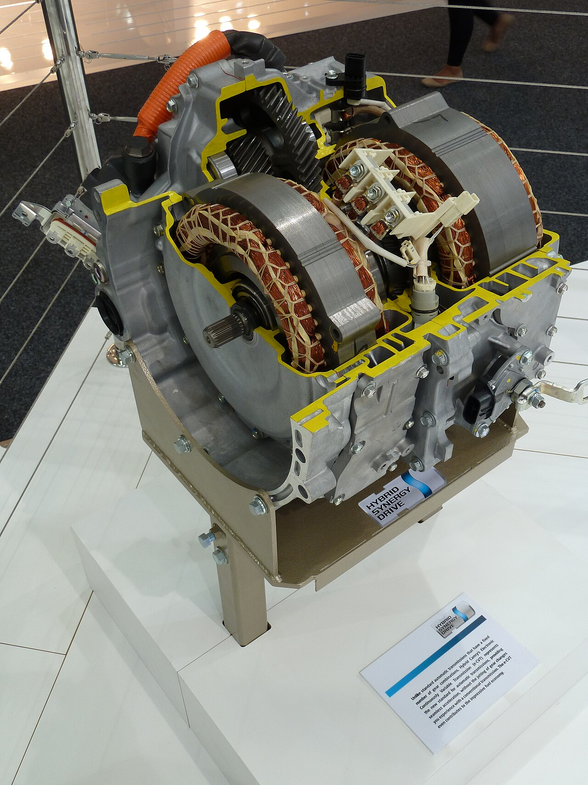

Diagnóstico
Leitura de falhas por scanner, análise de funcionamento e teste de rodagem para achar a causa real do problema.
AgendarMão de obra especializada só em câmbio automático: convencional, CVT e dupla embreagem, de todas as montadoras e todas as linhas. Não fazemos mecânica geral. Fazemos uma coisa, e fazemos bem.
P · Estacionamento: a trava bloqueia o eixo de saída.
Ilustração didática e simplificada de um conjunto planetário, o coração do câmbio automático convencional.
Mão de obra especializada em câmbio automático, do primeiro sintoma à retífica completa.
Leitura de falhas por scanner, análise de funcionamento e teste de rodagem para achar a causa real do problema.
AgendarDesmontagem, revisão completa e remontagem do câmbio automático para devolver o funcionamento original.
OrçamentoTroca do fluido ATF conforme a especificação de cada montadora, essencial para a vida útil do câmbio.
AgendarReparo e limpeza do corpo de válvulas e dos solenoides, causa comum de trancos e trocas irregulares.
ConsultarDiagnóstico e reparo de trepidação, patinação e superaquecimento ligados ao conversor de torque.
ConsultarAutomáticos convencionais, CVT e dupla embreagem, em nacionais e importados de todas as montadoras.
Consultar meu carroToque nos pontos vermelhos e descubra o que cada componente faz e quais sinais ele dá quando começa a falhar.
Cada tipo de câmbio automático funciona de um jeito e pede cuidados diferentes. A gente conhece os três.
Usa conversor de torque no lugar da embreagem e conjuntos de engrenagens planetárias comandados por embreagens e freios hidráulicos. É o tipo mais tradicional: suave, robusto e muito comum em SUVs, sedãs e picapes.
Não tem marchas fixas: duas polias de diâmetro variável ligadas por uma correia ou corrente de aço mudam a relação de forma contínua. O resultado é uma aceleração sem "degraus" e econômica.
Relação agora: 2,40 : 1
São duas embreagens: uma cuida das marchas ímpares e a outra das pares. Enquanto uma marcha trabalha, a próxima já fica pré-selecionada, e a troca acontece em frações de segundo.
Marcha 1 engatada · 2ª pré-selecionada
Marque o que você sente no carro. Em segundos você recebe uma orientação inicial e já manda tudo para o especialista pelo WhatsApp.
Marque pelo menos um sintoma para ver a orientação.
Orientação inicial, não substitui a avaliação. O diagnóstico de verdade é feito com o carro na oficina.
Toque no card para ver a resposta.

Há mais de 40 anos, a Mecfupi é especializada exclusivamente em mão de obra de câmbios automáticos, em sede própria no Imirim. Não fazemos mecânica geral e não mexemos em câmbio manual: toda a nossa experiência está concentrada em transmissões automáticas de todas as montadoras e todas as linhas. Todo serviço é feito com excelência e sai com garantia total e nota fiscal.
Conta o que o carro está fazendo, com marca, modelo e ano.
Testamos o câmbio para encontrar a causa, não só o sintoma.
Você entende o que precisa ser feito antes de qualquer serviço.
O carro só é liberado depois de testado na rua, com garantia total e nota fiscal.
Engrenagens planetárias, embreagens, conversor de torque: conhecemos cada componente por dentro.





Fácil acesso no Imirim, Zona Norte de São Paulo.
Mais de 40 anos de experiência, garantia total e nota fiscal. Mande a marca, o modelo, o ano e o que o carro está fazendo.